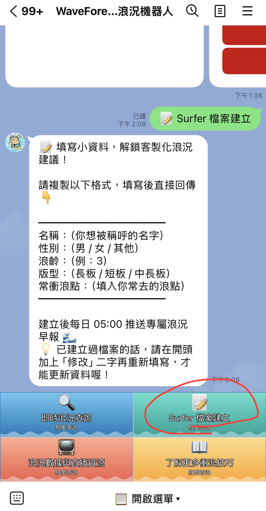

WaveForecast浪況機器人
加入「浪誌 TIDELOG」的 LINE 浪況機器人好友，每天 05:00 收到專屬浪況早報，隨時打浪點名稱查即時浪高、風向、潮汐。

- 每天 05:00 專屬浪況早報，依你的浪齡個人化推薦浪點
- 長浪／颱風警戒即時推播，不用自己盯氣象
- 打浪點名稱（如「烏石港」）隨時查即時浪高、風向、潮汐時刻
開通每日推播
加好友後，還要多一個步驟才會真的收到每天 05:00 的浪況早報：在 LINE 對話裡傳「Surfer 檔案建立」（或點選單同名按鈕），依格式填寫性別／浪齡／板型／常衝浪點並回傳，送出後就會自動開通，而且每天還會依你的程度收到個人化浪點推薦。

📱 在 LINE 對話裡傳「Surfer 檔案建立」，或點下方選單同名按鈕